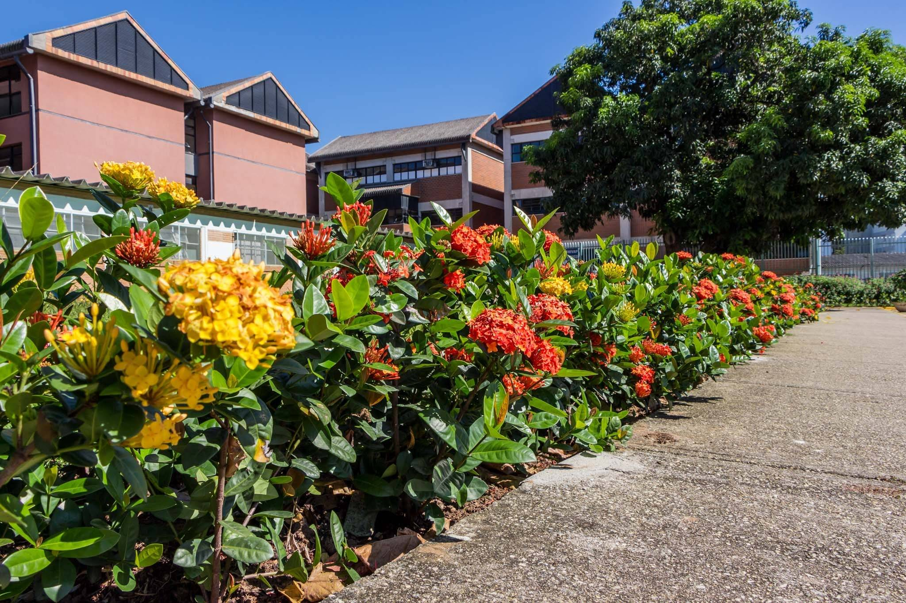

Estrutura
Azul-marinho#101F32
FEIRA TÉCNICA · UNIDADE CENTRO
Azul-marinho para orientar. Laranja para destacar. Superfícies neutras para dar espaço às ideias e às pessoas.
Azul-marinho#101F32
Laranja#C65013
Laranja suave#FFB47E
Cinza claro#F5F6F8
Tons desta implementação, seguindo a direção solicitada. A logo original está preservada; estes valores não substituem um manual oficial de marca.
TIPOGRAFIA · SEGOE UI + GEORGIA
Títulos expressivos na narrativa. Texto direto, legível e bem espaçado nas telas de trabalho.
Conhecer os projetos ↗Cartões claros, hierarquia simples e uma ação principal. A equipe e o projeto permanecem juntos.
Ver ranking das equipesNAVEGAÇÃO ACESSÍVEL
Foco visível pelo teclado, controles confortáveis no celular e movimento reduzido conforme a preferência do dispositivo.
Acesso de alunos e professores
Fotografia existente do acervo institucional. Cores naturais preservadas, com sobreposição azul apenas na abertura do site.